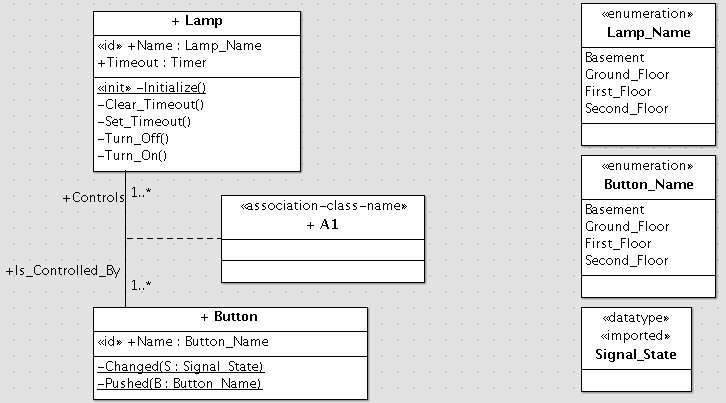

The vocabulary available for statechart modelling in UML is extensive. In fact, it's so extensive that to support all of it would be difficult, while for modellers to use all of it would be confusing for their audience if not for themselves.
ColdFrame only supports statecharts where
These restrictions may seem draconian, and indeed models produced with them will tend to have more states. However, they do allow you to make complete state models. The basic idea is that it's better to have a small language that you understand completely rather than a bigger but vaguer language.
This is a statechart for a Lamp. I assume that it's OK to turn on the lamp if it's already on and to turn it off if it's already off; we'd need some more intermediate states if not.
The Lamp is the kind that you find on shared stairwells; it stays on for a period of time after being switched on by a pushbutton, and you can extend the period by pushing again while it's still on.
The Lamp statechart involves a timeout, which is a special case of a delayed event.
Given an event, there are six things you can do with it:
There are two variants of the first operation:
The difference between Posting to be handled in the future and Setting on a Timer is that events that are posted to be handled in the future are "fire and forget", whereas Set events can be retracted. Set events are the kind to use for timeouts (indeed, in state machines in general, with perhaps odd exceptions).
Note that ColdFrame requires you to cancel (Unset) unfired timers before setting them again, and will also insist that a timer is in fact Set before you can Unset it. To make up for this, it guarantees that you can Unset a timer which has in fact fired at any point before the corresponding event has actually been handled, and the event won't be delivered.
Because you need to be quite sure about whether a timer needs to be Unset before being Set again, it's a very good idea never to manipulate a timer except in a state machine action.
In ColdFrame, events are always directed to a specific class. They may be Instance Events (used in state machines), which are directed to individual instances of the class, or Class Events (typically used for domain isolation).
However, in UML 1.4, and therefore in ArgoUML, events belong to the package in which they're declared rather than to a class. One way of handling this would be to put each class that has events associated with it in its own child package; this seems rather clumsy, so instead, prefix each event's name with the class it belongs to, as in the Lamp statechart. When generating code, ColdFrame discards all but the final name component (for example, Lamp.Button_Push becomes Button_Push when it's declared inside the Lamp package).
It's possible to use ArgoUML's Properties to set up entry and transition actions. However, because the Properties dialogs are so strongly related to the (complex) UML metamodel, it's much much easier to set them up by directly editing the statechart. In the case of an entry action, double-click in the body of the state and type entry / Action_1; Action_2 (the action part is a semicolon-separated list of actions); in the case of a transition, draw the transition, double-click in the label and type Class.Event or, if there are actions, Class.Event / Action_1; Action_2.
Instance events don't need to have any action associated with them, if all they do is cause transitions in the statechart. However, class events always need to have an action.
In the ArgoUML-supporting version of ColdFrame, this is organised using a StateMachine stereotyped «class», containing a dummy state and the required event/action association as a transition:
ArgoUML alows you to have as many StateMachines on a Class as you like (quite what that would mean isn't clear). ColdFrame allows you to have at most one unstereotyped StateMachine, and at most one stereotyped «class».
Because you can have both, it may be best (to avoid confusing the reader) if the events include .Class in the name, as in Button.Class.Button_Pushed above. As before, ColdFrame discards all but the last component of the name, so the translation (in the Button package) will be Button_Pushed.
In any case, ColdFrame requires that class events be stereotyped «class», as in
(note, this demonstrates the point above, that in UML events belong to the package).
Class Events will always carry a payload (though it might be an empty record); Instance Events need not.
To model an instance event without any payload, it's only necessary to show it on a statechart.
To model a payload, enter it in the Parameters section of the Properties tab for the event:
There can be no more than one parameter. ColdFrame will disregard its name, but it might as well be Payload!
It's best if the payload doesn't contain allocated data, because that may lead to memory leaks.
Instance events cause transitions. It's illegal for an event to occur in a state if there's no corresponding transition from that state (typically, a Can't Happen exception will be raised).
If you want an event to be ignored when it occurs in a particular state, provide a transition-to-current-state for that event and mark it «ignore». This means that the event is completely ignored, and in particular any entry actions don't get called. Don't do this with a completion transition (one with no triggering event).
At present, ArgoUML doesn't display the «ignore» stereotype on the statechart.
Note that you need to reserve Can't Happen for when it's logically impossible for the event to happen in the state, not just when it's undesirable!

The statechart for the Lamp class needs supporting in the class model.
The instance operations Turn_On, Turn_Off, Set_Timeout and Clear_Timeout correspond to the entry actions on the statechart.
Instance entry and transition actions can have a single parameter (aside from the implicit This): if you specify it, it must be of the type of the payload of the event that causes entry to the state concerned, and the actual payload will be passed at run time. This means that if you use this feature, all the events that cause entry to the state must carry the same payload type.
You can use the implicitly-generated Delete operation as an entry action (ColdFrame doesn't check that it's in a final state). Of course, it needs to be the last action.
If you need to delete the instance in any other action operation, you must mark the operation «final». A «final» operation must delete the instance.
The instance attribute Timeout, of the ColdFrame-special type Timer, is used to hold timeouts. The concept of operation for timeouts is:
The timer can be unset between the time when it's set and the time when the event is handled; if you do this, the event won't be delivered.
If you need to have more than one concurrent timeout, allocate a Timer variable for each.
As shown above, class events are associated with a handler or action, in this case Button.Pushed. The action must take a parameter of the same type as the event's payload, and must be a class operation (ownerScope checked in the modifiers section of the Properties tab).
Class events can be posted to run later or Set on Timers; however, mixing class timers with state machines may be a symptom of a poor state model. You'll probably want to make the Timer concerned a «class» attribute.